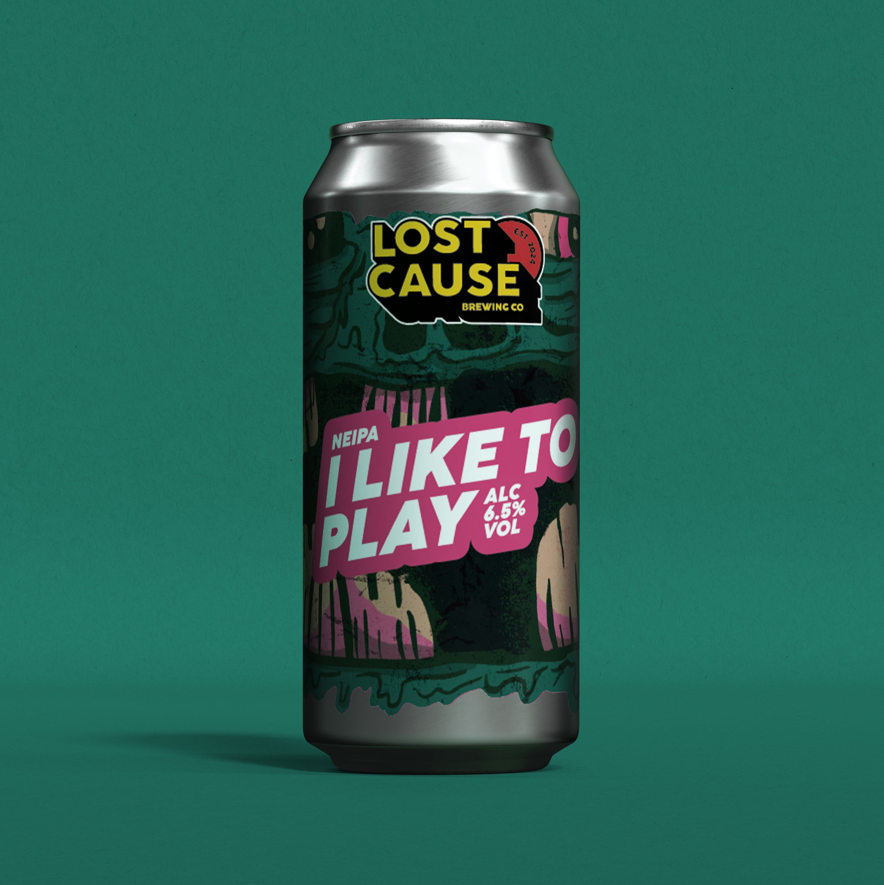

I Like To Play
6.5%NEIPA w/ Citra 3 ways - T90, Lupomax and Spectrum. It’s no secret that Colin loves citra, so we’ve had a play with this one. Layers of Citra on Citra on Citra, dry hopped at different stages with different types, to amplify the hop flavour. Huge citrus, tropical fruit and sticky resinous flavours throughout.